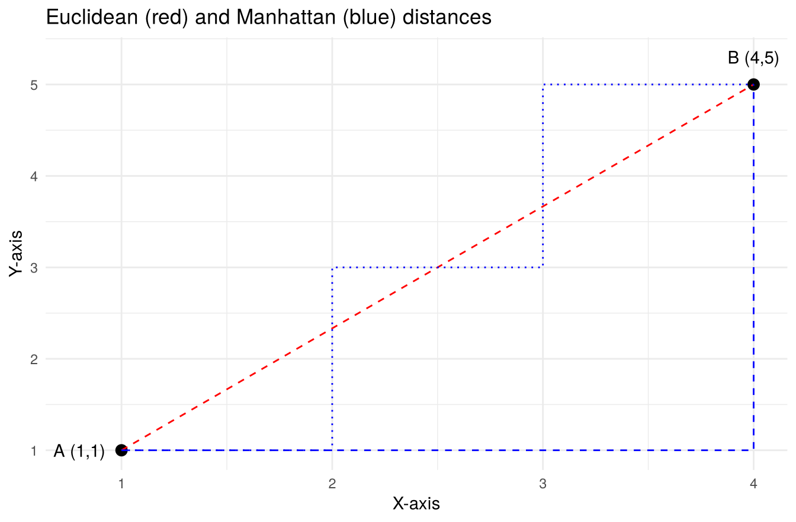
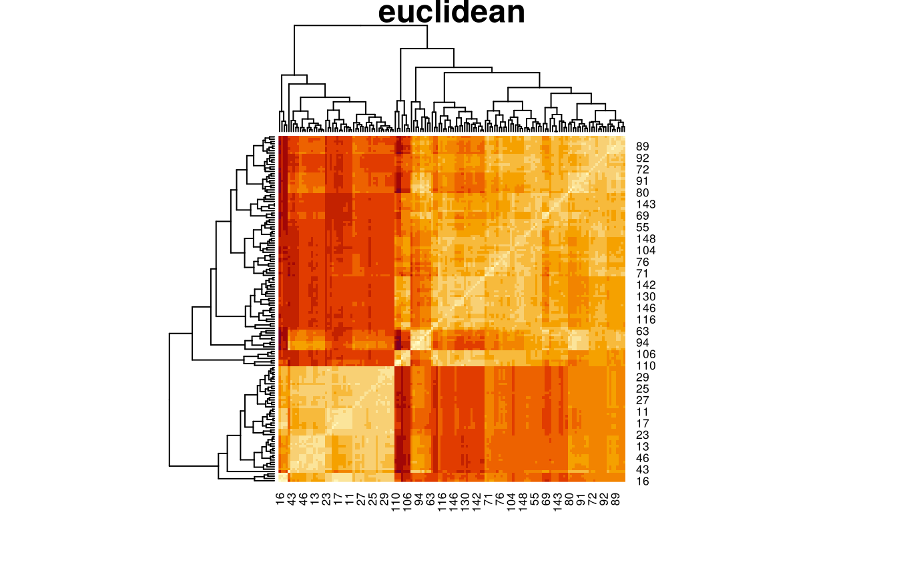
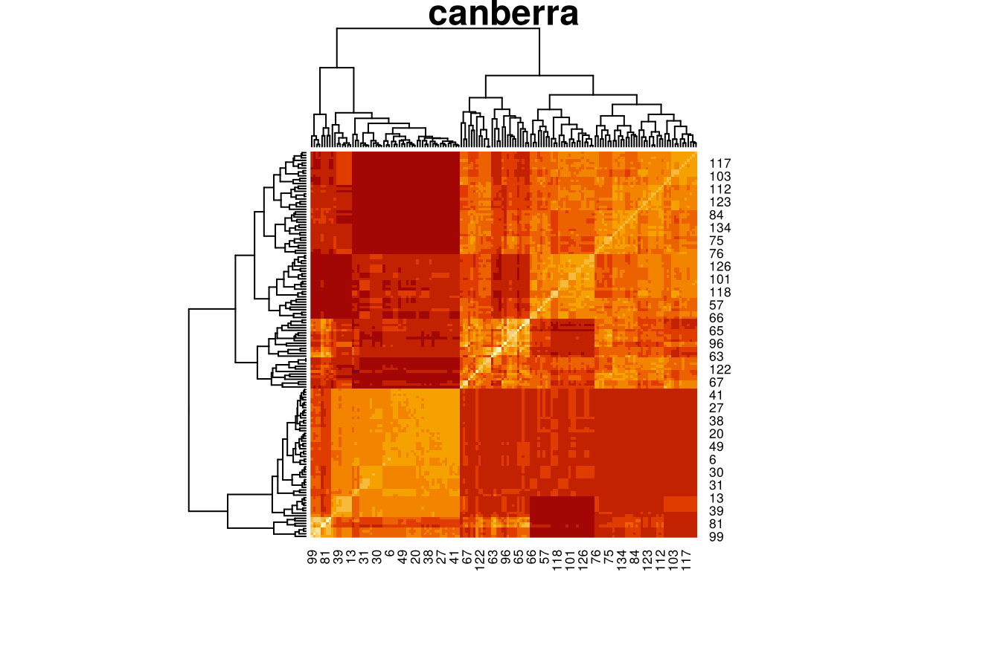
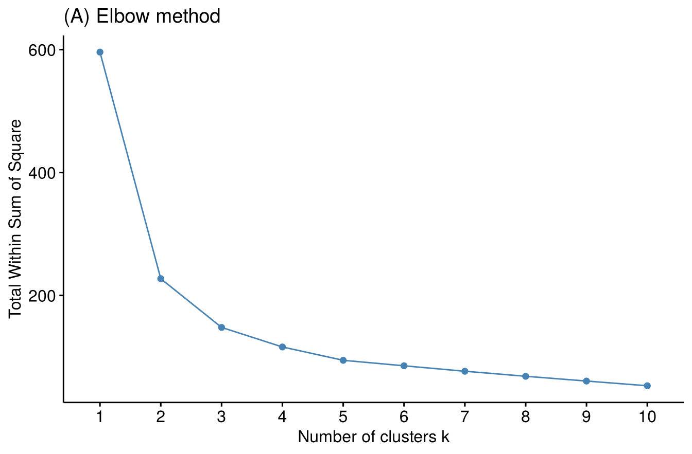
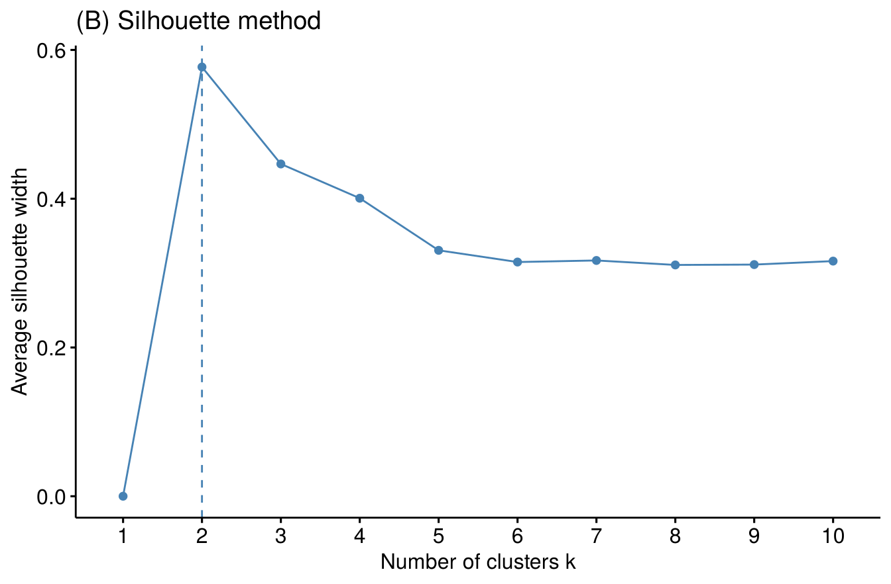
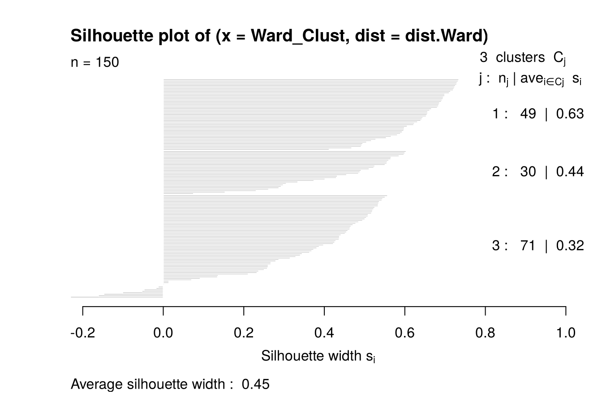
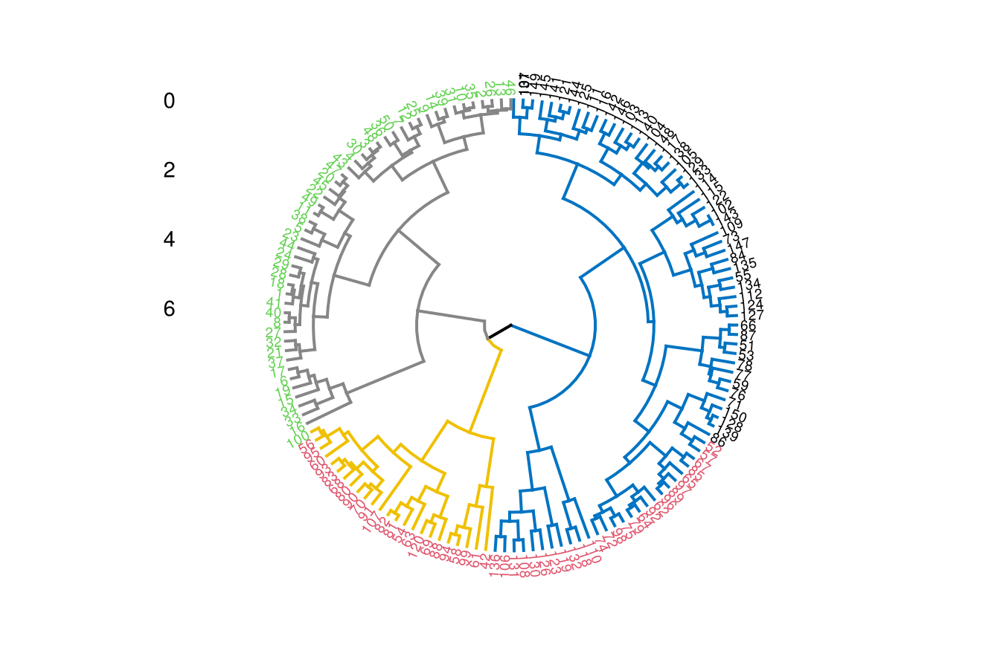
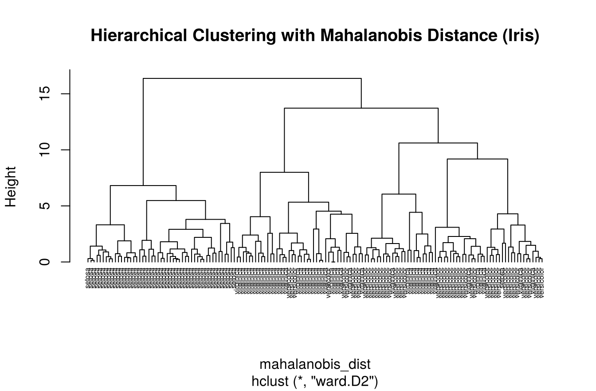

Last lecture we removed the response variable and asked in which directions a data cloud varies: PCA built new axes from the covariance structure and ordered them by variance. Today we stay in the unsupervised world but change the primitive question. Instead of asking about directions, we ask about the points themselves: which observations belong together? Which flowers, patients, sites, or gene-expression profiles are so similar that we should treat them as a group?
To organise the landscape, the classical multivariate methods fall into four families:
Based on a distance or dissimilarity measure: hierarchical cluster analysis, K-means cluster analysis — today’s lecture;
Based on correlation: principal component analysis, factor analysis — last lecture;
Hybrids: combinations of the above;
Multivariate confirmatory statistics: MANOVA, SEM — methods that test multivariate hypotheses rather than explore.
↪ Day 3 — PCA works from the covariance matrix; clustering works from the distance matrix. Two summaries of the same cloud, answering different questions.
Notice what is missing from today’s methods compared to the models of Day 1: there is no model equation, no assumed residual distribution, no likelihood, and therefore no p-value. Clustering is exploratory. It will always produce clusters — the algorithms cannot refuse — so the burden of judging whether the clusters mean anything falls entirely on you. Much of this lecture is about the tools for that judgement: comparing distance measures, bootstrapping trees, and scoring cluster quality.
KEY A clustering algorithm always returns clusters, meaningful or not. The output is a proposal, not a test result.
↪ Exercise 2.2 (Day 2): clusters found in pure noise, “confirmed” by t-tests on the same data, and the honest check on a validation half.
Distance
Distance between two points in space
Everything today rests on one primitive: the distance between two objects. That sounds unambiguous, but it is not — there are different distance measures, each with its own qualities, and they can result in different clusters from the same data.
Between two points A and B there are many routes: the straight line, the route along the axes, a winding path. Each defines a legitimate notion of “how far apart” — and once we choose one, everything downstream inherits the choice.
1-norm and 2-norm distance
The two workhorses have names from the vector norms they come from. The 2-norm or Euclidean distance is the straight line:
\[d_2(A, B) = \sqrt{\sum_{j=1}^{p} (a_j - b_j)^2},\]
and the 1-norm or Manhattan distance walks along the axes, like a taxi through a city grid:
\[d_1(A, B) = \sum_{j=1}^{p} |a_j - b_j| .\]
Code
library(ggplot2)A <-c(1, 1); B <-c(4, 5)ggplot() +geom_point(aes(x =c(A[1], B[1]), y =c(A[2], B[2])), size =3) +geom_segment(aes(x = A[1], y = A[2], xend = B[1], yend = B[2]),colour ="red", linetype =2) +geom_path(aes(x =c(1, 4, 4), y =c(1, 1, 5)),colour ="blue", linetype =2) +geom_path(aes(x =c(1, 2, 2, 3, 3, 4), y =c(1, 1, 3, 3, 5, 5)),colour ="blue", linetype =3) +annotate("text", x =0.8, y =1, label ="A (1,1)") +annotate("text", x =4, y =5.3, label ="B (4,5)") +labs(title ="Euclidean (red) and Manhattan (blue) distances",x ="X-axis", y ="Y-axis") +theme_minimal()

Note that both blue routes have the same Manhattan length — 3 across plus 4 up = 7 — while the red straight line has Euclidean length \(\sqrt{3^2 + 4^2} = 5\). When do you prefer which?
1-norm (Manhattan) works better in sparse datasets:
it focusses on the subspace with non-zero entries, bringing points that share the same subspace closer;
it is less sensitive to outliers — a single huge coordinate difference enters linearly, not squared.
2-norm (Euclidean) works for dense datasets:
it allows for compact, spherical clusters around a central point;
it is closest to our geometric intuition of distance;
all features are taken into account;
it is needed for algorithms based on centroids or variance measures — squared Euclidean distance is what sums of squares are made of.
KEY Squaring makes Euclidean distance outlier-hungry: a difference of 10 in one variable contributes 100. Manhattan lets it contribute 10. Your choice of norm is a choice about how much outliers may shout.
A different measure: an example
Distance matrices are older than any of this machinery — every road atlas contains one:
The table of pairwise distances between US cities is a distance matrix, and the panel below it makes a striking point: from the distances alone, without any coordinates, the relative positions of the cities can be reconstructed (we will meet the algorithm, MDS, in a moment). Note also the caption “Linear vs Geodesy”: even for cities, “distance” is a choice — the straight tunnel through the Earth, the great-circle route on its surface, or the kilometres of actual road all differ.
Objects that are near are similar
The real power comes from generalising this concept. Between arbitrary objects there can be a “distance” in terms of similarity:
similar objects are more “close”; dissimilar objects are more “distant” from each other;
similar objects can be grouped in clusters of similar objects, close together within their cluster;
more distant objects might be classified into different groups.
Two patients can be “close” in their symptom profiles, two vegetation plots in their species composition, two genes in their expression patterns across conditions. As soon as we can write down a sensible pairwise dissimilarity, everything in this lecture applies — the objects never need to live in a geometric space at all.
DEF A dissimilarity measure assigns to each pair of objects a non-negative number, zero for identical objects, larger for less similar ones. Distance measures are the geometric special case.
A generic cluster algorithm
With a dissimilarity in hand, a first clustering algorithm almost writes itself. Start at the leaves — the individual objects — fully unsupervised:
Define a metric between objects.
Calculate the distance matrix over all objects.
Group the closest objects together and give this group a new joined location, creating a new compound object.
Repeat the process until we end up with \(k\) groups — or one single group.
This bottom-up strategy is called agglomerative hierarchical clustering, and its output is not a single partition but a whole hierarchy of nested groupings: a tree.
Hierarchical cluster analysis
Written out more carefully, one round of the algorithm is:
Find the nearest pair in the distance (proximity) matrix.
Merge this pair into a new group.
Delete the pair as individual objects.
Calculate the location of this compound group, as if it were a single object — for this we need a way to compute a compound metric (next section).
Repeat 1–4 until all objects are merged into one final cluster.
Sensitivity to initial conditions. Note that this algorithm is greedy: every merge is final. The merging of objects in the initial phase — where outliers do their damage — will affect the entire structure of the resulting tree. Two points glued together in step one can never be separated later, however awkward that marriage turns out to be.
⚠ Greedy = irreversible. Early mistakes propagate: a single outlier can restructure the whole tree. We return to this with the bootstrap below.
The distance matrix in R
The dist() function computes the distance matrix between the rows of a data matrix:
dist(x, method ="euclidean", diag =FALSE, upper =FALSE, p =2)
with method one of "euclidean", "maximum", "manhattan", "canberra", "binary", or "minkowski" — a whole menu of the measures we just discussed.
Iris again
We stay with the iris data, so that you can compare today’s answers with what PCA found. As with PCA, distance measures like the Euclidean are very sensitive to scale — so we scale first:
⚠ Same pitfall as in Day 3: unscaled, petal length (variance 3.12) dominates every distance, and the clustering becomes a petal-length sorter. Scale unless the units are genuinely comparable.
A heatmap visualizes the full \(150 \times 150\) distance matrix — dark blocks along the diagonal are groups of mutually close observations:
heatmap(as.matrix(dist.iris), main ="euclidean")

And the same data through a different lens:
dist.can <-dist(Iris.scaled, method ="canberra")heatmap(as.matrix(dist.can), main ="canberra")

Same flowers, different distance, visibly different block structure. The choice of metric is already doing analytical work before any clustering has happened.
Multidimensional scaling (MDS)
The cities example promised that a distance matrix alone can be turned back into a map. That algorithm is multidimensional scaling:
start with a distance matrix capturing pairwise distances between points;
the MDS algorithm positions the points in a low-dimensional space (usually 2D or 3D) while preserving the pairwise distances as closely as possible;
the result is a scatter plot where proximity between points reflects their original distances.
↪ Metric MDS on Euclidean distances of scaled data reproduces the PCA score plot (up to sign flips). PCA and MDS are the same rotation reached from two directions: one from the covariance matrix, one from the distance matrix.
If this plot looks familiar, it should: for Euclidean distances, metric MDS recovers essentially the PCA scores of Day 3. But MDS is more general — it never needs the raw coordinates, only the distances, so it works for any dissimilarity we can define. Feed it the Canberra distances and a genuinely different picture appears:
This is an example of the effect of different metrics: some metrics portray particular properties better than others. Which measure should be used is, unfortunately, not always evident — it is a modelling choice, to be made on subject-matter grounds and reported honestly.
Distance between groups: linkage
The hierarchical algorithm had a gap at step 4: once two objects merge, how do we measure the distance from the compound group to everything else? This second distance — the distance between clusters — is called the linkage, and there are several standard choices:
Single linkage — minimal distance between the groups (nearest members);
Complete linkage — maximal distance between the groups (farthest members);
Average linkage — average of all pairwise distances between the groups;
Median linkage — median of all pairwise distances;
Centroid linkage — distance between the centroids (centres of mass) of the groups.
A skewed distribution of points can give a different group distance than a symmetric one; the same holds for dense versus spread-out clusters — which is why the linkage choice matters as much as the point-to-point metric.
DEFLinkage: the rule that extends a point-to-point distance to a cluster-to-cluster distance. Metric and linkage together fully specify a hierarchical clustering.
To this list belongs one more method with a different flavour: Ward’s method merges, at every step, the two clusters whose fusion increases the total within-cluster sum of squares the least. Ward does not measure a distance between groups so much as guard a variance budget — a formulation that should ring a Day 1 bell, and that returns in force with K-means below.
Four metric–linkage combinations, computed with agnes() from the cluster package:
Now look at the dendrograms of these different combinations.
The algorithm, from scratch
The whole procedure fits in a dozen lines, and writing it out removes any mystery. The version below keeps a list of clusters, searches all pairs for the smallest linkage distance, merges that pair and records the height. The linkage is passed in as a function: min for single, max for complete, mean for average linkage.
agglomerate <-function(D, linkage = max) { D <-as.matrix(D) members <-as.list(seq_len(nrow(D))) # every observation starts alone heights <-numeric(0)while (length(members) >1) { best <-Inffor (a in1:(length(members) -1)) for (b in (a +1):length(members)) { d_ab <-linkage(D[members[[a]], members[[b]]])if (d_ab < best) { best <- d_ab; pair <-c(a, b) } } heights <-c(heights, best) members[[pair[1]]] <-c(members[[pair[1]]], members[[pair[2]]]) # merge members[[pair[2]]] <-NULL } heights}set.seed(2)iris30 <- Iris.scaled[sample(150, 30), ]c(complete =all.equal(agglomerate(dist(iris30), max), hclust(dist(iris30), "complete")$height),single =all.equal(agglomerate(dist(iris30), min), hclust(dist(iris30), "single")$height),average =all.equal(agglomerate(dist(iris30), mean), hclust(dist(iris30), "average")$height))
#> complete single average
#> TRUE TRUE TRUE
The merge heights are identical to those of R’s hclust(). The naive version is slow: it examines all pairs of clusters at each of \(n - 1\) merges, and recomputes every linkage from the original distances, which costs of the order of \(n^3\) operations or worse. Real implementations avoid the recomputation with the Lance–Williams update: when clusters \(A\) and \(B\) merge, the distance from the new cluster to any other cluster \(C\) follows from distances already known,
\[
d(A \cup B,\, C) = \alpha_A\,d(A, C) + \alpha_B\,d(B, C) + \beta\,d(A, B) + \gamma\,\lvert d(A, C) - d(B, C)\rvert .
\]
Linkage
\(\alpha_A\)
\(\alpha_B\)
\(\beta\)
\(\gamma\)
single
\(\tfrac12\)
\(\tfrac12\)
\(0\)
\(-\tfrac12\)
complete
\(\tfrac12\)
\(\tfrac12\)
\(0\)
\(+\tfrac12\)
average
\(\frac{n_A}{n_A + n_B}\)
\(\frac{n_B}{n_A + n_B}\)
\(0\)
\(0\)
With \(\gamma = -\tfrac12\) the formula returns the smaller of the two distances, with \(+\tfrac12\) the larger. Even so, the full distance matrix must be stored, which needs memory of the order of \(n^2\).
⚠ For 150 flowers the distance matrix has about 11,000 entries. For 100,000 cells it has five billion. Hierarchical clustering does not scale to very large \(n\); K-means, below, does.
Dendrograms
plot(Dist, which.plot =2, labels = iris$Species,main ="Metric = euclidean, single linkage", hang =-1, cex =0.5)
Read a dendrogram from the bottom up: leaves are observations, and the height at which two branches fuse is the distance at which those groups merged. Low fusions mean tight similarity; a long vertical stretch before the next merge signals well-separated clusters. Note how different the three trees look — single linkage grows long straggly “chains” (each new point attaches to its nearest neighbour, however elongated the cluster becomes), while complete linkage and Ward produce compact, balanced blocks.
Which cluster tree is the best one?
Cutting the tree
A hierarchy becomes a partition by cutting the tree at a chosen height — or equivalently, asking for a chosen number of groups \(k\). With cutree() at \(k = 3\) (we secretly know there are three species):
Clusters.s <-cutree(as.hclust(Dist), k =3)lapply(c(1, 3, 2), function(nc) iris$Species[Clusters.s == nc])
For single–Euclidean, one cluster contains all versicolor and virginica together while a lone setosa forms its own cluster of size one — the chaining behaviour in action. Ward separates the two difficult species much better, though with some mixing. There is a clear difference in performance between the combinations.
But note carefully: we can only build these tables because iris is secretly supervised — we happen to know the species. In a genuine clustering problem there are no true labels, and a confusion matrix cannot be computed at all; confusion matrices properly belong to the supervised classification methods of Day 8. Here they are a didactic luxury.
⚠ No labels, no confusion matrix. In real unsupervised problems, cluster quality must be judged from internal measures (silhouettes, below) or stability (bootstrap, next).
↪ Confusion matrices return legitimately on Day 8, where classifiers are judged on labelled test data.
Bootstrapping hierarchical trees
The problem with standard trees
Standard hierarchical clustering is greedy: once two points are merged, they stay merged. This produces a deterministic tree that gives no indication of error — the dendrogram is drawn with the same crisp lines whether a branch is rock-solid or would dissolve at the slightest perturbation of the data. A single outlier could change the entire tree structure, and the tree itself will never tell you.
Every method earlier in this course came with uncertainty attached — standard errors, confidence intervals, p-values — all derived from an assumed residual distribution. Clustering assumed no distribution, so it has nothing to derive uncertainty from. Unless we make some: this is the idea of the bootstrap — disturb the data by resampling it, redo the analysis many times, and watch which features survive.
↪ On Day 7 the bootstrap is treated properly and in general. Here you meet it early, as a working tool: resampling replaces the assumed residual distribution of Day 1 with the data’s own variability.
The pvclust algorithm
The pvclust algorithm follows these steps:
Original tree: build a tree from the original data with the chosen distance and linkage settings.
Resample: create thousands of bootstrap datasets by sampling the measured variables with replacement from the original data.
Re-cluster: build a dendrogram for every single bootstrap dataset.
Count & match: for a specific branch in the original tree, count how many times exactly that group of objects appears together in the thousands of bootstrap trees.
Branches that reappear in nearly every bootstrap tree are robust; branches that dissolve when the data are disturbed were artefacts of this particular sample.
⚠pvclust resamples the variables, and it was designed for data with many of them, such as thousands of genes. Iris has only four, so there are very few distinct resamples and the AU values below are unreliable. Read them as a demonstration of the mechanics, not as evidence about iris.
Note the t(): pvclust clusters the columns of the matrix it receives and resamples the rows. By transposing, the 150 flowers become the columns to be clustered, and the four measurements become the rows being resampled.
AU and BP values
Look at the dendrogram just generated:
The red boxes: a red rectangle marks a cluster that is significant at the chosen level — here, we are 95% confident these objects belong together rather than being grouped by random noise.
The numbers at the edges: printed at the branching points (nodes).
AU (Approximately Unbiased, red): the headline value. An AU of 98 means the existence of this cluster is very robust.
BP (Bootstrap Probability, blue): the raw proportion of bootstrap trees containing the branch — usually lower than AU, and biased.
The greedy check: if the AU value is low (say < 60), the objects are close but swap partners frequently when we disturb the data — exactly the fragile early merges the greedy algorithm cannot warn us about. If the AU value is high (> 90), the branch is very robust.
The verdict depends, as always, on metric and linkage. With Ward:
Cutting the tree required a \(k\); K-means below will demand one up front. Two standard instruments help choose it.
The elbow method
Compute, for each candidate \(k\), the total within-cluster sum of squares, and look for the elbow — the point after which adding clusters buys only marginal reduction:
library(factoextra)fviz_nbclust(Iris.scaled, FUN = hcut, method ="wss",k.max =10) +ggtitle("(A) Elbow method")

↪ This is the scree-plot logic of Day 3 in new clothes: components then, clusters now — buy complexity one unit at a time and stop where the returns flatten.
Silhouette scores
The silhouette asks, for every single point, whether it sits comfortably in its own cluster:
Within-cluster dissimilarity\(a(i)\): for data point \(i\), the average distance between \(i\) and all other points in the same cluster — how well \(i\) fits where it is.
Nearest-cluster dissimilarity\(b(i)\): the average distance between \(i\) and all points in the nearest neighbouring cluster — how tempting the best alternative is.
close to 1: the point is well-clustered — much closer to its own cluster than to any other;
close to 0: the point sits on or near the decision boundary between two clusters;
as working bands: 1 to 0.5 is good, 0.5 to 0.20 is weak, 0.20 to 0 is borderline;
negative: misclassified — the point is closer to another cluster than to its own.
fviz_nbclust(Iris.scaled, FUN = hcut, method ="silhouette",k.max =10) +ggtitle("(B) Silhouette method")

Note the friction: the silhouette curve favours \(k = 2\) — from pure geometry, versicolor and virginica form one blob — while we know biologically that three species are present. Neither instrument is wrong; the data genuinely contain one crisp separation and one subtle one. Internal indices see geometry, not biology.
The full silhouette plot for the Ward solution at \(k = 3\), one horizontal bar per flower, grouped by cluster:
Ward_Clust <-cutree(as.hclust(Dist.Ward), k =3)dist.Ward <-dist(Iris.scaled, method ="euclidean")Sil <-silhouette(Ward_Clust, dist.Ward)plot(Sil)

Reading the plot:
\(n\): a larger number means a larger cluster;
average silhouette width per cluster: how compact and well-separated is it? Higher (closer to 1) means the cluster’s points are compact and well away from other clusters; lower (near 0 or negative) means its points are close to, or overlapping with, other clusters.
Different visualisations
The circular dendrogram below colours the labels by true species but lets the tree structure speak for itself — closer to the realistic setting in which species labels are not available:
set.seed(243)hc <-hclust(dist.iris, method ="complete")fviz_dend(hc, label_cols =as.numeric(iris$Species), cex =0.5, k =3,k_colors ="jco", type ="circular", show_labels =TRUE)

Mahalanobis distance
One more distance deserves mention, because it closes a loop with Day 3. Euclidean distance treats all directions as equal — but the iris cloud is not spherical: its variables covary, and a step of one unit “along” the cloud’s elongation is far less surprising than the same step perpendicular to it. The Mahalanobis distance corrects for exactly this, by measuring distance relative to the covariance structure:
\[d_M(a, b) = \sqrt{(a - b)^\top S^{-1} (a - b)},\]
with \(S\) the covariance matrix. Dividing by \(S\) (in the matrix sense) rescales every direction by the variance the data actually show in that direction — Euclidean distance in the whitened space where the cloud is made spherical.
S_inv <-solve(cov(Iris.scaled))n <-nrow(Iris.scaled)mahalanobis_dist <-matrix(0, n, n)for (i in1:n) { d <-sweep(Iris.scaled, 2, Iris.scaled[i, ]) mahalanobis_dist[i, ] <-sqrt(rowSums((d %*% S_inv) * d))}mahalanobis_dist <-as.dist(mahalanobis_dist)hc_mah <-hclust(mahalanobis_dist, method ="ward.D2")plot(hc_mah, labels = iris$Species, hang =-1, cex =0.5,main ="Hierarchical Clustering with Mahalanobis Distance (Iris)")

↪ Day 3: the covariance matrix returns, now in the denominator. PCA uses the covariance structure to build axes; Mahalanobis divides it out to make distances fair.
K-means
The idea
In hierarchical clustering — and in PCA — we did not specify any number of clusters in advance. In K-means clustering, one must first specify the desired number of clusters \(K\); the algorithm then assigns each observation to exactly one of the \(K\) clusters. The algorithm is fast, so in practice we run K-means for multiple values of \(K\) — and we need a measure to find the best one (elbow and silhouette, as before).
The algorithm
K-means is a much simpler algorithm than hierarchical clustering, and because it needs no full distance matrix it scales better to large data sets. The price is that the search is repeated until it settles. One variant proceeds as follows:
Start with an initial partition into \(k\) groups.
Calculate the centroids and the within-cluster variance.
Move one individual from one cluster to another.
Calculate the new centroids and variance.
Keep the move if it decreases the total within-cluster Sum of Squares (SS).
Repeat 3–5 until the SS stops changing.
The quantity being minimised deserves a second look. For any partition of the data, the total sum of squares splits exactly:
and \(SS_{\text{total}}\) is fixed by the data. K-means hunts for the partition with minimal \(SS_{\text{within}}\) — equivalently, maximal \(SS_{\text{between}}\). You have seen this partition before: it is the ANOVA decomposition of Day 1, run in reverse. ANOVA takes known groups and asks whether \(SS_{\text{between}}\) is large relative to \(SS_{\text{within}}\); K-means takes no groups and constructs the ones that make that ratio as favourable as possible. (Which is also exactly why you must never feed K-means clusters into an ANOVA on the same variables and admire the p-value — the groups were built to win that test.)
KEY K-means is the ANOVA variance partition run backwards: choose the groups that minimise the within-group variance. Same budget, opposite direction.
⚠ Never test for differences between clusters using the variables that built the clusters — the test is rigged by construction.
Local minima. The algorithm stops at a local minimum, which can depend on the initial distribution of points over the \(k\) clusters — a different random start can end in a different partition.
Lloyd’s algorithm, from scratch
The algorithm that is usually meant by “K-means” is Lloyd’s algorithm. It alternates two steps until nothing changes:
Assignment: assign every point to its nearest centre.
Update: move every centre to the mean of the points assigned to it.
lloyd <-function(X, centres, max_iter =100) { W <-numeric(0)for (it inseq_len(max_iter)) {# squared distance of every point to every centre D <-sapply(seq_len(nrow(centres)), function(k) colSums((t(X) - centres[k, ])^2)) cl <-max.col(-D, ties.method ="first") # assignment step W <-c(W, sum(D[cbind(seq_len(nrow(X)), cl)])) # within-cluster SS new <-t(sapply(seq_len(nrow(centres)),function(k) colMeans(X[cl == k, , drop =FALSE])))if (all(abs(new - centres) <1e-12)) break centres <- new # update step }list(cluster = cl, centres = centres, W = W)}set.seed(568)start <- Iris.scaled[sample(150, 3), ] # three random flowers as initial centresmine <-lloyd(Iris.scaled, start)ref <-kmeans(Iris.scaled, centers = start, algorithm ="Lloyd", iter.max =100)round(mine$W, 2) # within-cluster SS at every iteration
The result equals that of R’s kmeans() from the same start. The printed sequence shows the key property: the within-cluster sum of squares never increases. The argument takes two lines.
In the assignment step the centres are fixed, and every point moves to the centre nearest to it. Each point’s squared distance can only decrease or stay the same.
In the update step the assignments are fixed, and each centre moves to the cluster mean. The mean is exactly the point that minimises the sum of squared distances to a set of points, so the sum again can only decrease.
A quantity that never increases and cannot fall below zero must converge, and since there are finitely many partitions, the algorithm stops after finitely many steps. It stops, however, at a local minimum: nothing in the argument says that the partition reached is the best one.
DEF — k-means++ chooses the initial centres one at a time, each with probability proportional to its squared distance from the centres already chosen. Spread-out starts make poor local minima much less likely.
One iteration costs of the order of \(nKp\) operations and needs no distance matrix, which is why K-means scales to data sets on which hierarchical clustering cannot even be started.
There is also a direct bridge between the two views of this chapter, distances and variances. The within-cluster sum of squares around the centroid equals the sum of all pairwise squared distances within the cluster, divided by the cluster size:
dist() counts each pair once, which accounts for the factor \(\tfrac12\). K-means therefore minimises pairwise squared Euclidean distances within clusters, without ever computing one.
Choosing the number of clusters K
Compute K-means for a range of \(K\) values and plot the total within-cluster SS against \(K\):
The first run would suggest one elbow, the second run a different one — the local-minimum problem made visible. Two honest analysts with two random seeds reach different conclusions from identical data. The practical remedy is to give the algorithm many random restarts and keep the best: kmeans(..., nstart = 25) runs 25 initial partitions and returns the one with the lowest within-SS, which stabilises the elbow plot considerably.
⚠ A single K-means run is a single draw from a lottery of local minima. Always use nstart (e.g. 25) in real analyses.
The K = 3 solution
The centres are the representatives of the clusters — each row is a cluster centroid in the four (scaled) measurements:
Compare these tables to the plots above. In both cases setosa is clustered perfectly, but a clean separation of virginica and versicolor is more problematic — or are some individual flowers simply labelled incorrectly? Geometry cannot tell us; only the biology can.
As \(K\) grows past the natural structure, average silhouette widths shrink and negative bars appear: the extra clusters are slicing through blobs rather than separating them.
Other cluster algorithms
Partitioning Around Medoids (PAM) is K-means’ robust sibling: instead of centroids (means, which no actual observation occupies), each cluster is represented by its medoid — a real observation — which tames the influence of outliers, in the same spirit as the median versus the mean:
The first flowers (setosa) belong to their cluster with probability around 0.8 — confident. The last flowers (virginica) hover around 0.45–0.65, sharing their membership with the versicolor cluster: the same versicolor–virginica ambiguity that every method today has stumbled over, now expressed as honest probabilities instead of forced assignments. Silhouettes can also be calculated for these algorithms.
Notes and summary
Every merge step in hierarchical clustering is irreversible: the first steps have high influence on the final partition — bootstrap the tree to see which branches deserve trust.
Choices matter twice: the point-to-point metric and the linkage each shape the result, and different combinations can disagree substantially on the same data.
Missing data and outliers enter the distance matrix as if they were real variation, and propagate into the clustering.
K-means needs\(K\), a random start, and a variance budget: it minimises within-cluster SS — the ANOVA partition in reverse — and lands in local minima, so use elbow/silhouette for \(K\) and nstart for stability.
Clustering is an exploratory method: it always delivers clusters. You need external information — biology, design, follow-up data — for interpretation, and internal indices plus bootstrap stability for honesty.
Bridge to the practical
In the practical you will cluster a multivariate data set along the full arc of this lecture: choose and defend a distance measure, compare linkage methods on the dendrograms, decide on the number of clusters with the elbow and silhouette instruments, and assess stability. As with PCA, the algorithm’s output is the beginning of the interpretation, not the end.
On Day 7 the tool that appeared here as a helper, resampling the data to see what survives, becomes the main subject.